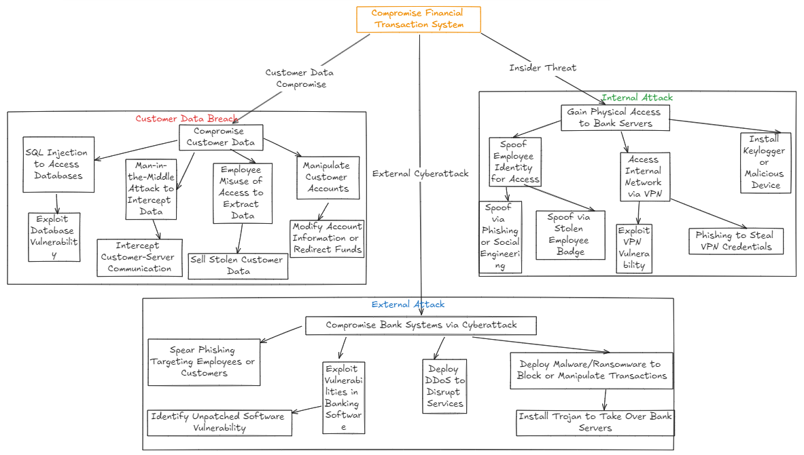

Case Study: Threat Modeling for a Large International Bank
In this scenario, potential threats to a large international bank based in the UK are analyzed using various threat modeling approaches, including STRIDE, DREAD, and Attack Trees. Key resources include the Threat Modeling Manifesto, OWASP Threat Modeling Cookbook, and the MITRE ATT&CK Framework.
1. Using of Resources
Threat Modeling Manifesto
The Threat Modeling Manifesto advocates for a collaborative and iterative approach to managing threats. For a bank, it is crucial to work with security teams, compliance experts, IT managers, and auditors to ensure that all layers of security—from payment systems to online services—are covered.
OWASP Threat Modeling Cookbook
- Securing APIs to protect online banking services from injection attacks.
- Protecting against credential theft through multi-factor authentication (MFA) and password rotation policies.
MITRE ATT&CK Framework
The MITRE ATT&CK Framework offers specific techniques attackers may use against a bank:
- T1078 (Account Manipulation): Used to steal credentials and access sensitive customer or employee accounts.
- T1210 (Exploitation of Internal Applications): Attacking the bank’s internal systems, such as transaction management applications.
- T1485 (Data Destruction): Destroying or corrupting critical banking data, such as account information or transactions.
2. Applying the Threat Models
STRIDE Method
- Spoofing: Theft of customer or employee credentials to access internal
systems or accounts.
Mitigation: Multi-factor authentication and behavioral analysis for suspicious logins. - Tampering: Modifying financial transactions to divert funds or falsify
records.
Mitigation: Immutable logging systems and real-time monitoring. - Repudiation: A user may deny having made a fraudulent or unauthorized
transaction.
Mitigation: Digital signatures and cryptographic transaction logging. - Information Disclosure: Leakage of sensitive customer data.
Mitigation: Data encryption across all processes and communications. - Denial of Service (DoS): Overloading servers to disrupt online services.
Mitigation: Load balancing, redundancy, and DDoS protection. - Elevation of Privilege: Gaining administrative privileges to access
customer data.
Mitigation: Role-based access control (RBAC) and regular audits.
DREAD Method
The DREAD method is used to assess the risks associated with each threat identified in STRIDE:
- Damage Potential: A compromise of the financial transaction system could result in massive losses and damage to customer trust. (Score: 9)
- Reproducibility: A successful attack could be repeated if the vulnerability is not promptly addressed. (Score: 8)
- Exploitability: Phishing attacks or system vulnerabilities may allow exploitation despite security measures. (Score: 6)
- Affected Users: Millions of customers and employees depend on these systems, increasing the impact. (Score: 9)
- Detectability: Phishing attacks or account manipulation may go undetected without user reports. (Score: 5)
The total DREAD score helps prioritize which threats require immediate attention.
Attack Tree
The Attack Tree models the detailed ways a threat can target the bank’s systems, focusing on financial transaction systems and customer databases. This helps identify how an attack could escalate through different components of the system.
Conclusion
This threat model for a large UK-based bank utilizes a combination of techniques from STRIDE, DREAD, and Attack Trees, relying on resources such as the Threat Modeling Manifesto, OWASP Threat Modeling Cookbook, and MITRE ATT&CK Framework. The identified threats, particularly in transaction systems and customer data protection, require robust mitigation strategies.
Resources Used for this Model
- Shostack (2018): Used to understand and apply STRIDE, DREAD, and Attack Trees methodologies. Provides theoretical and practical insights into these techniques.
- Spring et al. (2021): Critique of the CVSS system for contextual use cases, highlighting the limitations of relying solely on quantitative scoring for critical infrastructures such as a bank.
- Threat Modeling Manifesto: A guide for integrating a collaborative and iterative approach in threat modeling.
- MITRE ATT&CK: A database for identifying specific cyberattack techniques relevant to this type of infrastructure.
- OWASP Threat Modeling Cookbook: A practical collection of threat modeling solutions tailored to different scenarios.